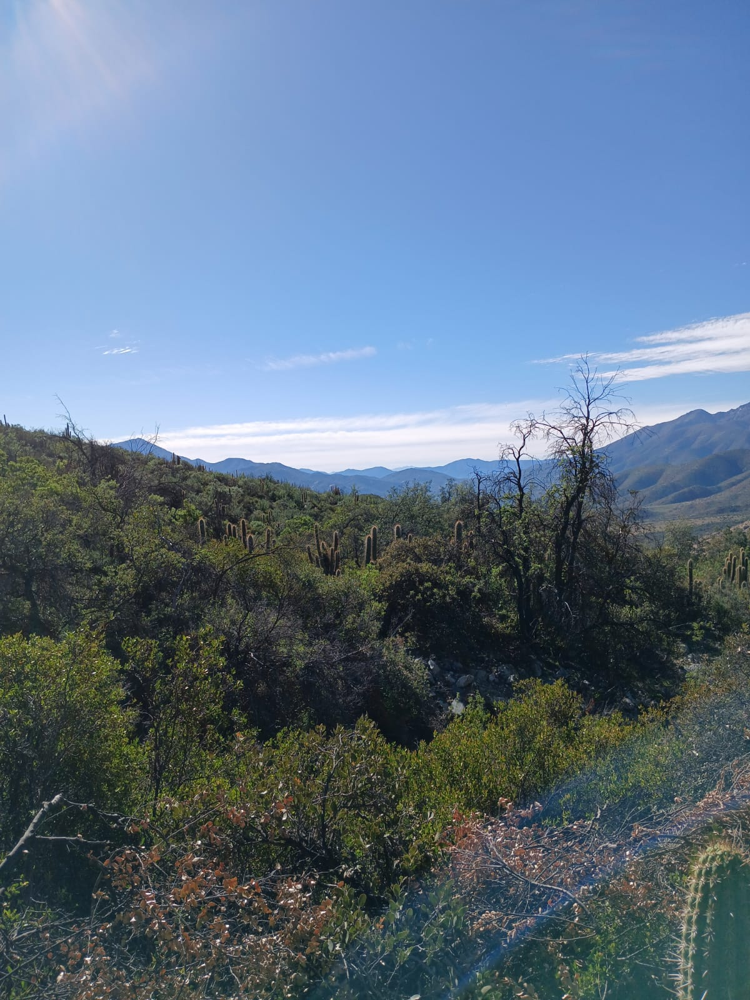
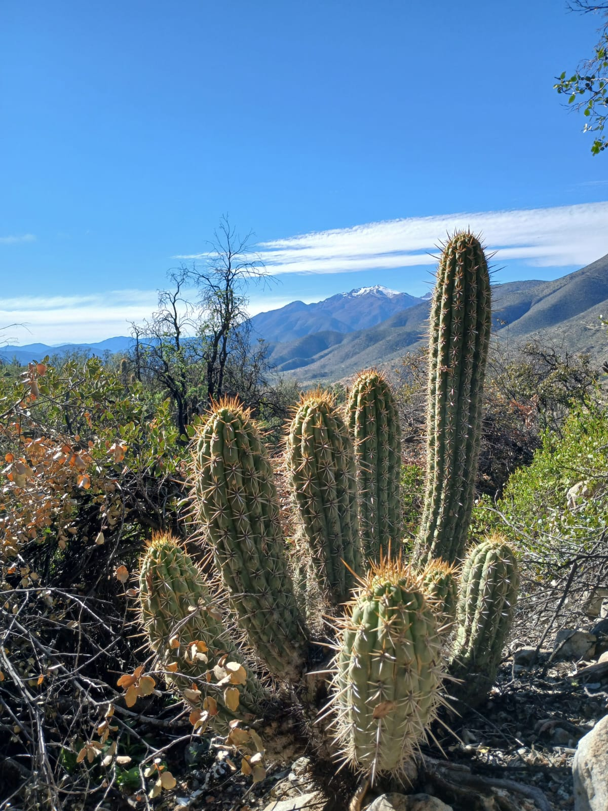

Regeneración Nativa surge con el propósito de coordinar, trabajar y concretar los cambios propuestos por la ciencia para enfrentar la crisis climática y social que se retroalimentan y afectan hoy en día a nuestra especie.

Nuestra misión es utilizar el conocimiento acumulado por nuestra especie para coordinar, trabajar y concretar los cambios necesarios para nuestro planeta, fomentando la regeneración de los espacios naturales que nos otorgan servicios ecosistémicos claves, el desarrollo de una economía sostenible y el desarrollo del homo sapiens, comenzando por la zona en donde nacimos y crecimos, la provincia de Petorca.
Nuestra visión es un mundo en el que la naturaleza y el ser humano vivan en tal armonía que la potenciación y cuidado de la primera signifique el desarrollo del segundo. Imaginamos una humanidad que viva mediante prácticas económicas sostenibles y colaborativas, asegurando el progreso de la especie, la biodiversidad y servicios ecosistémicos esenciales para esto.
